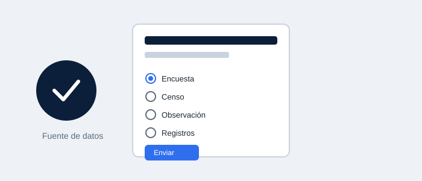

Descripción
Se estudiaron las distintas fuentes de información (primarias y secundarias) y técnicas de recolección de datos: encuestas, censos, observación y registros administrativos. La Práctica 2 consistió en diseñar un instrumento de recolección de datos y aplicarlo a un caso de negocio.
Documentos de la práctica
Los documentos completos (prácticas, ejercicios y datos) están disponibles en Google Drive: